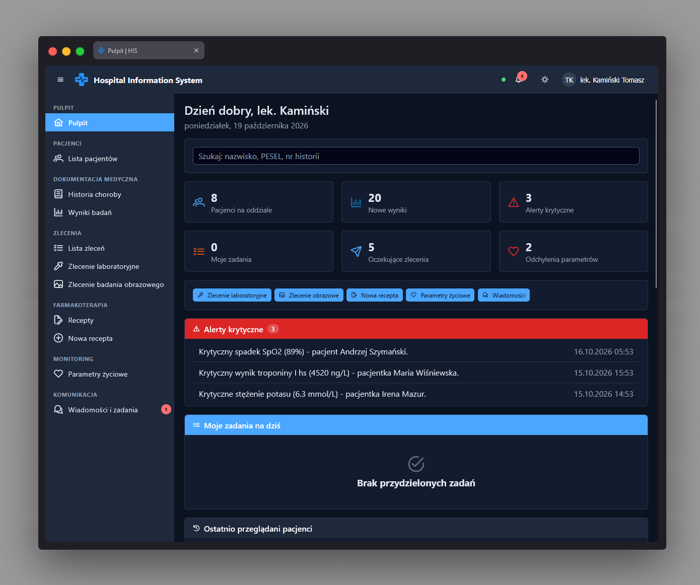

Panel główny (dashboard) app-dashboard-page
Ścieżka
Strona startowa po zalogowaniu:
Logowanie → Panel główny. Dostępna pod adresem
/dashboard, jest domyślnym przekierowaniem po wejściu
na /. Widoczna dla każdej zalogowanej osoby (wymaga
tylko authGuard, bez dodatkowego uprawnienia RBAC) -
zawartość poszczególnych kafelków zmienia się jednak w zależności
od uprawnień roli.
Przeznaczenie
Ekran powitalny prezentujący skrócony przegląd sytuacji klinicznej: statystyki szpitala, krytyczne alerty, zadania przypisane do zalogowanej osoby, nieprawidłowe wyniki badań oraz listę aktualnie przyjętych pacjentów. Udostępnia też skróty (quick actions) do najczęstszych czynności oraz wyszukiwarkę pacjenta.
Każdy widget odpytuje swój własny endpoint równolegle
(forkJoin); jeśli rola nie ma uprawnień do danego
widgetu (np. farmaceuta nie ma dostępu do zadań zespołowych),
widget pokazuje pusty stan zamiast błędu - dashboard nigdy nie
"psuje się" całościowo z powodu jednego brakującego uprawnienia.
Dane wejściowe
- Zapytanie w wyszukiwarce pacjenta (imię, nazwisko lub PESEL) - komponent wyszukiwania.
- Kliknięcie jednego ze skrótów akcji (quick actions): rejestracja pacjenta, zlecenie laboratoryjne, zlecenie obrazowe, nowa recepta, parametry życiowe, wiadomości - każdy skrót jest widoczny tylko, gdy rola ma odpowiednie uprawnienie.
- Kliknięcie kafelka statystyki (np. przyjęci pacjenci, wyniki, alerty, zadania, zlecenia, parametry życiowe) lub wiersza listy (pacjent, alert) - przechodzi do właściwej podstrony.
Akcje
-
Pobiera i wyświetla statystyki szpitala
(
DashboardService.getStats()). - Pobiera nieprzeczytane krytyczne alerty kliniczne i pozwala przejść do ich źródła (wynik, zlecenie, pacjent).
- Pobiera zadania przypisane do zalogowanego użytkownika o statusie otwartym.
- Pobiera ostatnie nieprawidłowe wyniki badań laboratoryjnych wraz z danymi pacjenta (dociąga nazwisko pacjenta, jeśli nie jest załączone w wyniku).
- Pobiera listę aktualnie przyjętych pacjentów jako zapasowe źródło danych.
- Przekierowuje do odpowiedniej podstrony po wybraniu skrótu akcji lub kliknięciu wiersza listy/kafelka.
Zrzut ekranu
